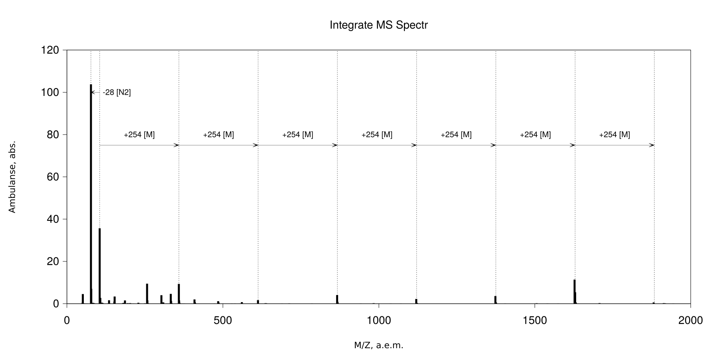
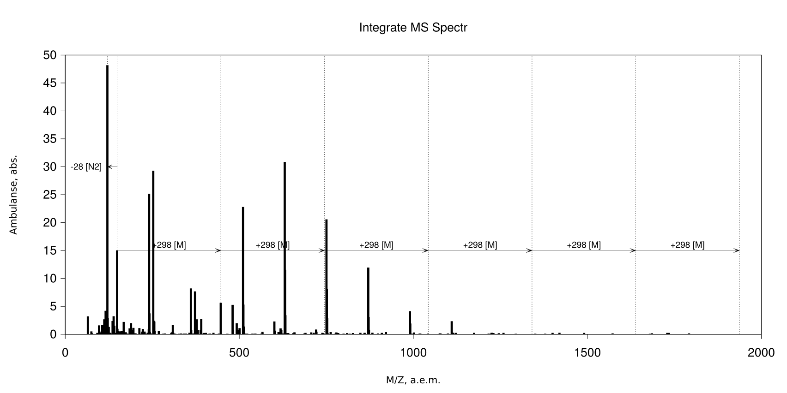
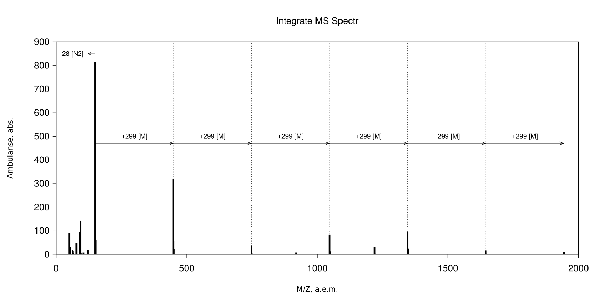
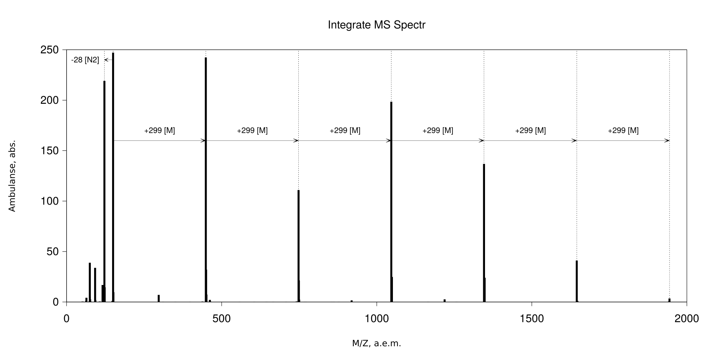
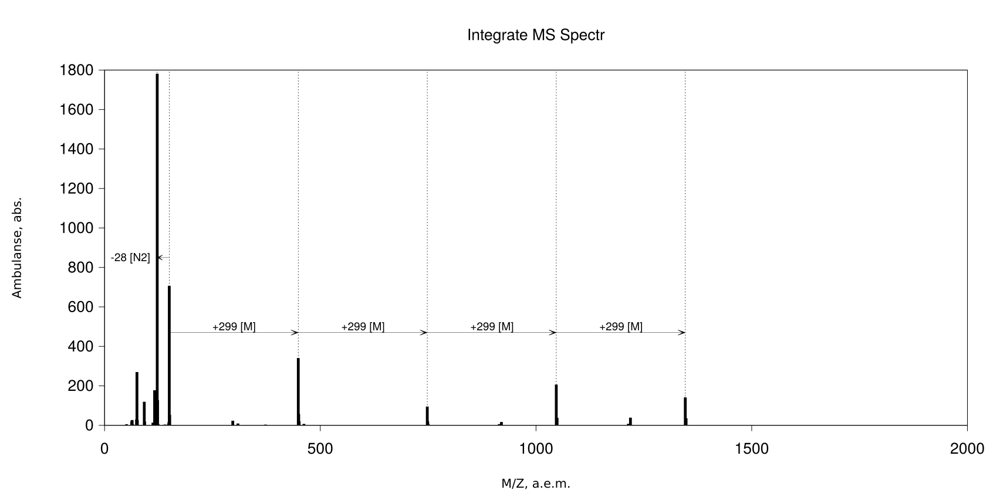
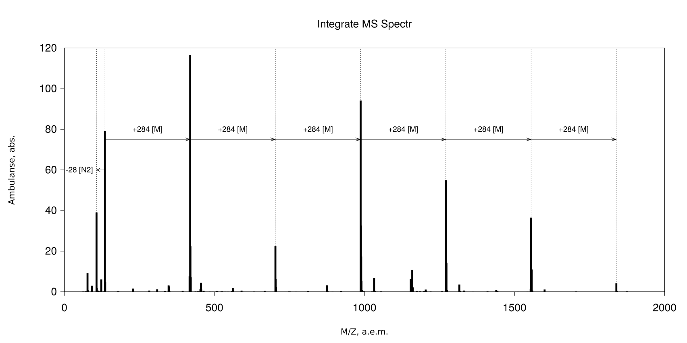
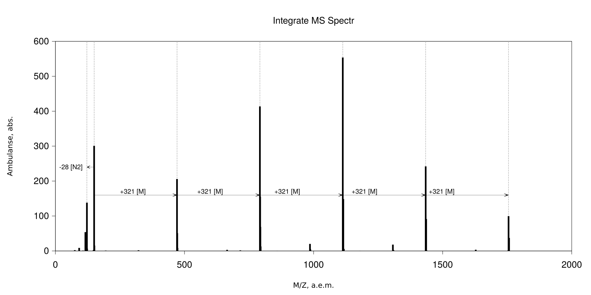
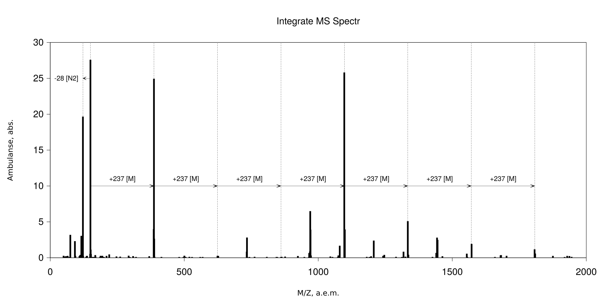
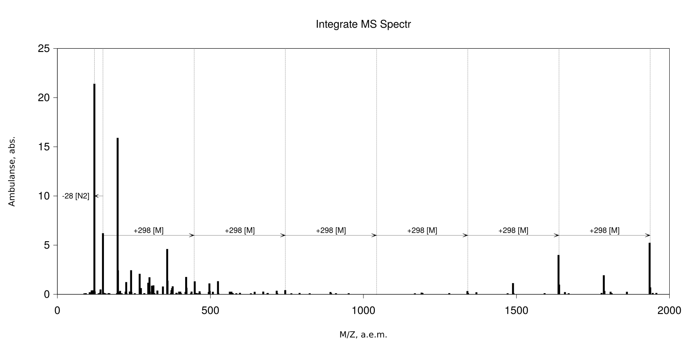
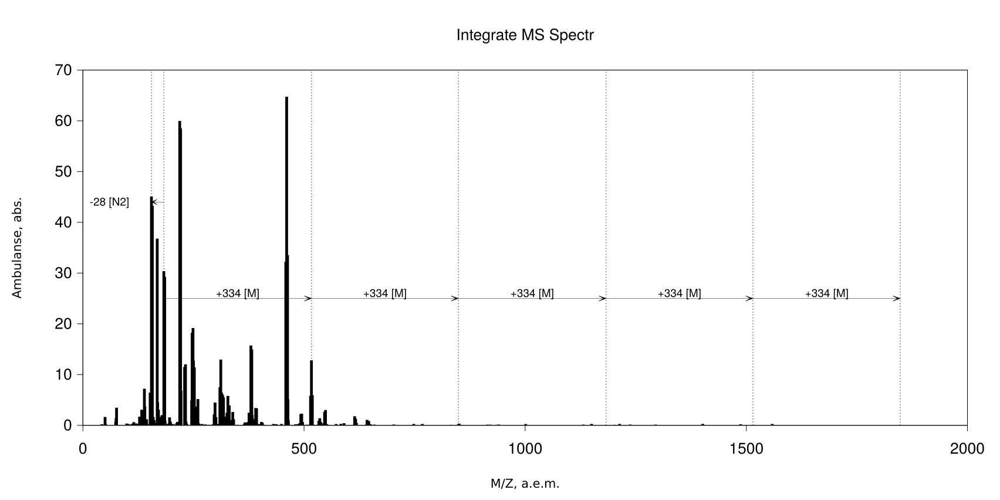

Спектры:

Fig. NN. ESI/MS of the All-D10 in the positive mode.

Fig. NN. ESI/MS of the All-D11 in the positive mode.

Fig. NN. ESI/MS of the All-D1 in the positive mode.

Fig. NN. ESI/MS of the All-D2 in the positive mode.

Fig. NN. ESI/MS of the All-D3 in the positive mode.

Fig. NN. ESI/MS of the All-D4 in the positive mode.

Fig. NN. ESI/MS of the All-D5 in the positive mode.

Fig. NN. ESI/MS of the All-D6 in the positive mode.

Fig. NN. ESI/MS of the All-D7 in the positive mode.

Fig. NN. ESI/MS of the All-D8 in the positive mode.